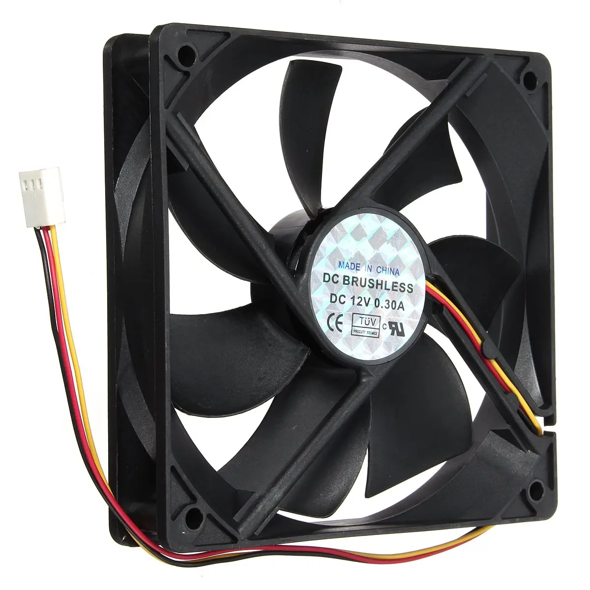

Cooler:
Imagem de exemplo de um Cooler:

O Cooler é um sistema de refrigeração do hardware do computador, ele serve para
basicamente evitar superaquecimento e manter o desempenho estável além de claro
aumentar a vida útil das peças (Afinal, nada é para sempre.)